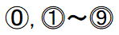

新規挿入可能なシート名の判定
マクロVBAで、
シートの存在確認およびシートとして使える文字列かどうかの判定は、
厳密に行おうとするとかなり大変になってきます。
その時のツイートでのやり取りは、こちら
シート名として使える文字列か判定
Function PermitName(ByVal argName As String) As Boolean
PermitName = False
If Len(argName) > 31 Then Exit Function
If argName = "履歴" Then Exit Function
If Left(argName, 1) = "'" Then Exit Function
Dim 禁止文字 As Variant
禁止文字 = Array(vbNullChar, _
":", "\", "/", "?", "*", "[", "]", _
"：", "\", "／", "？", "＊", "［", "］", "＼")
Dim i As Long
For i = LBound(禁止文字) To UBound(禁止文字)
If InStr(argName, 禁止文字(i)) > 0 Then
Exit Function
End If
Next
PermitName = True
End Function
シート名の制限として、
・31文字以内
・「履歴」は予約語として使えない
・先頭「'」シングルクォーテーションは使えない
・以下の文字は使用不可
vbNullChar
:\/?*[]
：\／？＊［］＼
シートの存在確認：存在すればシートのオブジェクトを返す
Function SheetExists(ByVal argName As String, _
Optional ByVal wb As Workbook = Nothing) As Object
Dim sht As Object
If wb Is Nothing Then Set wb = ThisWorkbook
For Each sht In wb.Sheets
If StrConv(LCase(sht.Name), vbNarrow) = StrConv(LCase(argName), vbNarrow)
Then
Set SheetExists = sht
Exit Function
End If
Next
Set SheetExists = Nothing
End Function
シート名は、全角・半角、大文字・小文字を区別しない、
つまり、全角・半角違いや、大文字・小文字違いの同名シートは作成できない。
存在判定だけなら、戻り型はBooleanにしたいところだが、
多くの場合、存在した場合はそのシートを使う事になるので、そのシートを戻りとしています。
従って、存在しない場合は、Nothingを戻しています。
また、グラフシート等の場合もあり得るので、データ型としてはObjectにしています。
On Error を使った簡単な存在確認
Function SheetExists(ByVal argName As String, _
Optional ByVal wb As Workbook = Nothing) As Object
If wb Is Nothing Then Set wb = ThisWorkbook
On Error Resume Next
Set SheetExists = wb.Sheets(argName)
End Function
"Sheet1"のシートが存在している場合、
"Ｓｈｅｅｔ1"（全角）は、「インデックスが有効範囲にありません。」のエラーになり、存在しない判定になります。
しかし、"Sheet1"が存在する場合、"Ｓｈｅｅｔ1"のシートは作成できません。
このような全角違いの問題を考慮する必要が無い場合であれば、On Errorでの判定は簡単で良いでしょう。
後日追加
0,1～9
０,１～９
①～⑨

これらが区別されません。
全角半角は先のStrConvで変換していますが、丸数字の2種類は別途Functionで変換してチェックしなければなりません。
この変換のVBA自体は難しくありませんが、「」これらはshift-jisにない為、VBAで固定文字として書くことができません。
ChrW関数で文字コードを指定する必要があります。
さすがに、ここまで必要になる事はあまり無いとは思いますが、一応サンプルVBAを掲載しておきます。
Function ChangeName(ByVal argName As String) As String
Dim i As Long, j As Long
Dim RoundNumbers1
RoundNumbers1 = Array("0", "①", "②", "③", "④", "⑤", "⑥", "⑦", "⑧", "⑨")
Dim RoundNumbers2(9)
RoundNumbers2(0) = ChrW(9450)
For i = 1 To 9
RoundNumbers2(i) = ChrW(9460 + i)
Next
For i = 0 To 9
argName = Replace(argName, RoundNumbers1(i), i)
argName = Replace(argName, RoundNumbers2(i), i)
Next
ChangeName = StrConv(LCase(argName), vbNarrow)
End Function
必要であれば、先のSheetExistsの、
If StrConv(LCase(sht.Name), vbNarrow) = StrConv(LCase(argName), vbNarrow) Then
これを↓
If ChangeName(sht.Name) = ChangeName(argName) Then
こちらに変更してお使いください。
シートの挿入：存在すればシートのオブジェクトを返す
PermitName
SheetExists
この二つのFunctionの使い方のサンプルをかねて、
シートを新規挿入する場合のサンプルになります。
Sub sample()
Dim sht As Object
Set sht = SheetsAdd("te'st")
If sht Is Nothing Then
MsgBox "指定のシート名は使用できません"
End If
End Sub
Function SheetsAdd(ByVal argName As String, _
Optional ByVal wb As Workbook = Nothing) As Object
Set SheetsAdd = Nothing
If Not PermitName(argName) Then Exit Function
If wb Is Nothing Then Set wb = ThisWorkbook
Set SheetsAdd = SheetExists(argName, wb)
If Not SheetsAdd Is Nothing Then Exit Function
Set SheetsAdd = wb.Worksheets.Add
SheetsAdd.Name = argName
End Function
SheetsAddについては、
引数にシートの挿入位置や、既存シートの場合は削除後に新規挿入するかどうか等々、
もう少し機能アップしたFunctionにするのも良いでしょう。
同じテーマ「マクロVBA技術解説」の記事
Applicationを省略できるApplicationのメソッド・プロパティ一覧
PowerQueryの強力な機能をVBAから利用する方法
ShapesとDrawingObjectsの相違点と使い方
新規挿入可能なシート名の判定
VBAにおける配列やコレクションの起点について
VBAのマルチステートメント（複数のステートメントを同じ行に）
クリップボードに2次元配列を作成してシートに貼り付ける
ユーザー定義型の制限とクラスとの使い分け
シングルクォートの削除とコピー（PrefixCharacter）
空文字列の扱い方と処理速度について（""とvbNullString）
VBAにおける変数のメモリアドレスについて
新着記事NEW ・・・新着記事一覧を見る
VBA100本ノック 100本目：WEBから100本ノックのリストを取得｜VBA練習問題（3月3日）
VBA100本ノック 99本目：自動席替え（行列と前後左右が全て違うように）｜VBA練習問題（3月2日）
VBA100本ノック 98本目：席替えルールが守られているか確認｜VBA練習問題（3月1日）
VBA100本ノック 97本目：Accessデータを取得（グループ集計）｜VBA練習問題（2月27日）
VBA100本ノック 96本目：Accessデータを取得（マスタ結合&抽出）｜VBA練習問題（2月26日）
VBA100本ノック 95本目：図形のテキストを検索するフォーム作成｜VBA練習問題（2月24日）
VBA100本ノック 94本目：表範囲からHTMLのtableタグを作成｜VBA練習問題（2月23日）
VBA100本ノック 93本目：複数ブックを連結して再分割｜VBA練習問題（2月22日）
VBA100本ノック 92本目：セルの色を16進で返す関数｜VBA練習問題（2月20日）
VBA100本ノック 91本目：時間計算（残業時間の月間合計）｜VBA練習問題（2月19日）
アクセスランキング ・・・ ランキング一覧を見る
1.最終行の取得（End,Rows.Count）｜VBA入門
2.RangeとCellsの使い方｜VBA入門
3.変数宣言のDimとデータ型｜VBA入門
4.マクロって何？VBAって何？｜VBA入門
5.Range以外の指定方法（Cells,Rows,Columns）｜VBA入門
6.セルのコピー&値の貼り付け（PasteSpecial）｜VBA入門
7.繰り返し処理（For Next)｜VBA入門
8.セルに文字を入れるとは（Range,Value）｜VBA入門
9.マクロはどこに書くの（VBEの起動）｜VBA入門
10.とにかく書いてみよう（Sub,End Sub）｜VBA入門
- ホーム
- マクロVBA応用編
- マクロVBA技術解説
- 新規挿入可能なシート名の判定
このサイトがお役に立ちましたら「シェア」「Bookmark」をお願いいたします。
記述には細心の注意をしたつもりですが、
間違いやご指摘がありましたら、「お問い合わせ」からお知らせいただけると幸いです。
掲載のVBAコードは動作を保証するものではなく、あくまでVBA学習のサンプルとして掲載しています。
掲載のVBAコードは自己責任でご使用ください。万一データ破損等の損害が発生しても責任は負いません。